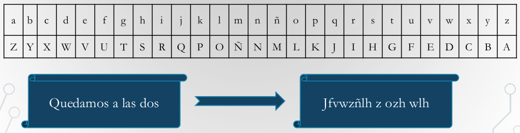
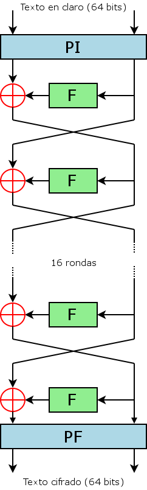
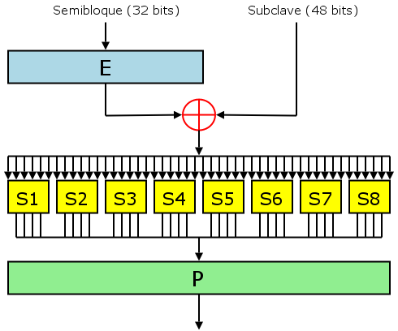

Cifrado simétrico
Mikel Egaña Aranguren
mikel-egana-aranguren.github.io

Mikel Egaña Aranguren
Mikel Egaña Aranguren
mikel-egana-aranguren.github.io
https://doi.org/10.5281/zenodo.4302267
https://github.com/mikel-egana-aranguren/EHU-SGSSI-01


Objetivos
Técnicas básicas en criptografía clásica
Enrollar una tira de papel en un bastón y escribir el mensaje
Desenrollar el papel y enviarlo al destino


Se necesita un bastón exactamente igual para descifrar el mensaje
Enrollar la tira de papel alrededor del bastón y leer el mensaje
La clave de este sistema es el diámetro del bastón
Distribuir el mensaje en columnas
La clave viene determinada por la cantidad y orden de las columnas

Criptoanálisis
Cifrado monoalfabético
Empleado por Julio César
Consiste en sumar 3 a la posición de cada letra en el alfabeto

Cifrado monoalfabético
Técnica proveniente del alfabeto hebreo
Consiste en sustituir cada carácter por su "contrario"

Cifrado monoalfabético
Generalización método César
E(a;b)(M) = (aM + b) mod N
N es el número de caracteres del alfabeto
César es una transformación afín con E(1,3)
Cifrado monoalfabético
Generar la tabla de correspondencias de manera "manual"

Cifrado monoalfabético
Pueden ser caracteres o dígitos

Criptoanálisis basado en estadística
Método establecido por Al-Kindi en el siglo 9
Un carácter "original" siempre se sustituye por el mismo carácter/es
Se sabe cuáles son los caracteres más frecuentes en cada idioma
Se sabe las palabras de dos/tres/cuatro caracteres (bigramas, trigramas y tetragramas) más frecuentes en cada idioma
Se va "probando" y deduciendo
Cuanto más largo es el texto cifrado, mejor
Hay que saber el idioma del texto original
Porcentaje de aparición de caracteres en castellano

Ejemplo de descifrado por análisis de frecuencias
Técnicas para dificultar el criptoanálisis
Primer sistema polialfabético
Dos discos concéntricos, el interior móvil
Durante el cifrado, se va moviendo, por lo que en el cifrado se usan X alfabetos (correspondencias) distintas
La clave es la posición inicial, cada cuántos caracteres se gira el disco, cuánto se gira y en qué dirección
Es probablemente el elemento criptográfico más conocido de la historia
Originalmente diseñada para uso civil
Modificada para uso militar y usada por los nazis
El matemático polaco Marian Rejewski estableció las bases para desencriptar Enigma
El equipo de Alan Turing partió de esta información para crear su propia "bomba" más eficiente y resistente a cambios de configuración
Criptoanálisis
En vez de cifrar un mensaje, cifran bit a bit
Usado para comunicaciones en tiempo real (No se puede esperar a tener el mensaje completo para cifrarlo y transmitirlo)
A partir de la clave, se usa un generador "pseudoaleatorio" que genera el flujo de clave
La operación XOR entre el bit a cifrar y el flujo de clave, genera el criptograma

Realiza el cifrado XOR entre el texto y una clave aleatoria de la misma longitud
El generador es realmente aleatorio
La clave (el flujo de clave) es lo denominado "libreta de un solo uso":
Basados en el método de Vernam
Usar claves pseudoaleatorias generadas a partir de una semilla y un algoritmo de generación
Con la semilla y el algoritmo de generación se podría reconstruir la clave pseudoaleatoria (Depende del número de posibles semillas distintas)
No son matemáticamente irrompibles
Ejemplos:
Partir el mensaje original en bloques de tamaño fijo:
Cada bloque de mensaje original genera un bloque de mensaje cifrado
Se pueden añadir iteraciones, permutaciones y operaciones entre los distintos bloques

https://commons.wikimedia.org/wiki/File:DES-estructura-basica.png


https://commons.wikimedia.org/wiki/File:DES-key-schedule.png
Triple DES - 1998: Basado en realizar 3 ejecuciones de DES (Cifrar – Descifrar - Cifrar):
- 2001:
IDEA - 1991:
KASUMI (A5/3) – 2000:
Redes 4G:
Siempre encuentra la solución
Consiste en probar todas las claves posibles
Hay que conocer el algoritmo de cifrado y el espacio de claves
No siempre es posible por su coste temporal
Espacio de claves:
Tiempo que se tardaría con un superordenador:
Se puede hacer un ataque por fuerza menos bruta y más "inteligente":
{kind=link}
{kind=link}
{kind=link}